An Introduction to Docker!
# Survey:
* Hands up if you know roughly what Docker is
# Survey:
* Hands up if you know roughly what Vagrant is
# A Brief Intro to Docker?
## It's a Container Technology!
# How Does it Work?
You simply define the prefect environment your application needs to run in and specify the start commands.
# Vagrant Comparison
"Vagrant is a tool focused on providing a consistent development environment workflow across multiple operation systems. Docker is a container management that can consistently run software as long as a containerization system exists." - HashiCorp.
## Why do we need Docker?
* It runs everywhere that docker can!
* New developers can get started with minimal fuss
* No more "But it works on my machine!"
## Multi-Cloud Support
Most, if not all major Cloud service providers support the deployment and management of Docker based applications
## Migrating Your Legacy Applications
The good news? It can be fairly easy to migrate your Legacy applications to use Docker. You can replicate your VSI/PSI environment setup using a RedHat image and provide it with all of your configuration.
## Docker images
Docker images are built up from a series of layers. Each layer is an instruction in your image's Dockerfile. You can build custom images for your application or use pre-existing images from Docker Hub if you need a quick and simple solution.
## A Tale of 2 Developers
Meet Donna and Donald
## Dave
Dave goes off and builds a Python REST API using Python 3.6
## Donna
He tries to share this with Donna, who is a hardcore Data Scientist and uses Python 2.7
## Donna
Donna pulls down the code from the repository. She tries to run the app calling `python app.py` and hits versioning issues.

## Donna
She contacts Dave who informs her she has to update to version 3.6 and run both versions side by side on her work machine.
## Donna
She installs Python 3.6 and spends a couple of hours setting up environment variables so that she can easily switch between both.
## Donald
Donald tries to run the code locally and realizes he's working with out of date Python packages. He spends some time updating these packages and subsequently breaking other microservices on his machine reliant on older features.
## Donald

## How Docker Fixes These Issues
By capturing the exact environment your application needs to run in a Dockerfile, you eliminate the wasted time your colleagues spend trying to get their environment just right.
You eliminate Donald's problem of impacting other services running locally, each will have immutable dependencies with set versions.
You can run loads of different docker containers side-by-side, each with their own versions of various libraries.
## Implementing a Solution
Let's see how we could implement Docker for our Python application and eradicate these issues.
## It Works!
Open up http://localhost:9000 in your local browser.

We now have a working application that is portable across multiple cloud service providers, multiple operating systems, or any device/system that can run docker.

## Making Changes
Ok, so how do we make a change?
## Rebuilding our Docker Image
In order to make changes to our Docker based application, we'll have to rebuild our image once we are happy with changes.
## Cached Steps
When you make changes to your application and run `docker build` once again, you should notice it runs a hell of a lot faster.

## Faster!
When you now start making changes, you should notice almost instantaneous builds as our pip install step is now cached.

## Introducing Docker Hub Image Registry
Docker Hub is an image registry that contains thousands of different pre-built docker images. These can be pulled down and run in a matter of minutes.
## Introducing Docker Hub Image Registry
Fancy a RabbitMQ instance on your local machine? Pull down the RabbitMQ image and start it. Easy.

## Good Resources
* [9 Docker Common Mistakes](https://runnable.com/blog/9-common-dockerfile-mistakes)
* [An Introduction to Docker - Nigel Poulton](https://app.pluralsight.com/library/courses/docker-getting-started/table-of-contents)
* []
## How do you manage a million containers?